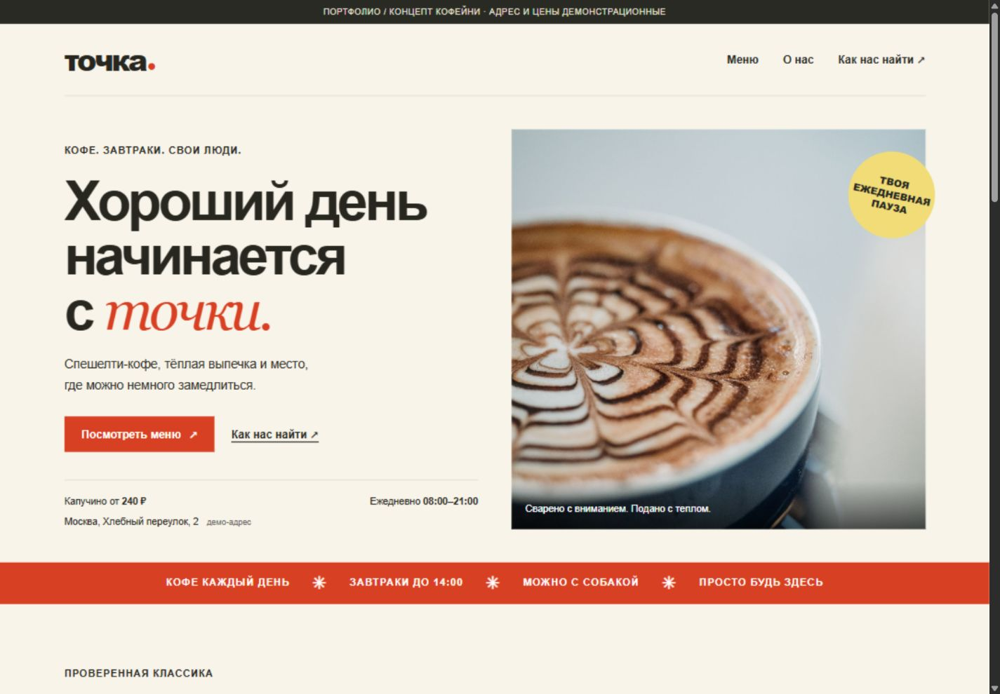

Задача
Место, с которого начинается хороший день. Меню, атмосфера и адрес — без лишних шагов.
Помочь гостю с телефона быстро понять, что предлагает кофейня, сколько стоит кофе и куда идти.
HTML / CSS / JavaScriptЧто работает
- Адаптивная страница для телефона, планшета и компьютера
- Меню с ценами, объёмом напитков и весом блюд
- Переходы к меню и контактам с первого экрана
- Галерея интерьера и напитков
- Демо-адрес, часы работы и ссылка на карту
- Семантическая разметка, клавиатурная навигация и режим уменьшенного движения
Кофейня, адрес, контакты и цены вымышлены. Фотографии демонстрационные. Социальные ссылки ведут на главные страницы платформ, а не на действующие аккаунты кофейни.